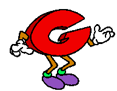
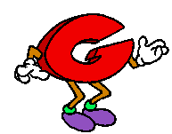
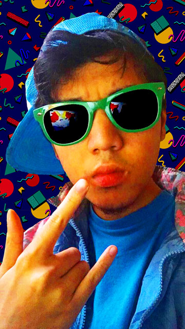

About
Hey you!!! It's me, that funny ol Goober from Tumblr who did stuff from Aquafresh to Woody's Roundup. Now that's over, I'm focusing on doing commissions! I primarily use Paint Tool Sai and Photoshop to create my works, drawing and coloring with the former and composing with the latter. I also toy around with After Effects every now and then to do some simple animations. Outside of the software realm, I'm also in the works of making a puppet of my own sona, and if that goes well I may also take puppet commisions too!!
News
"I believe that you pray to it when you are unhappy. Men made it, do not forget that. Great men, but men."